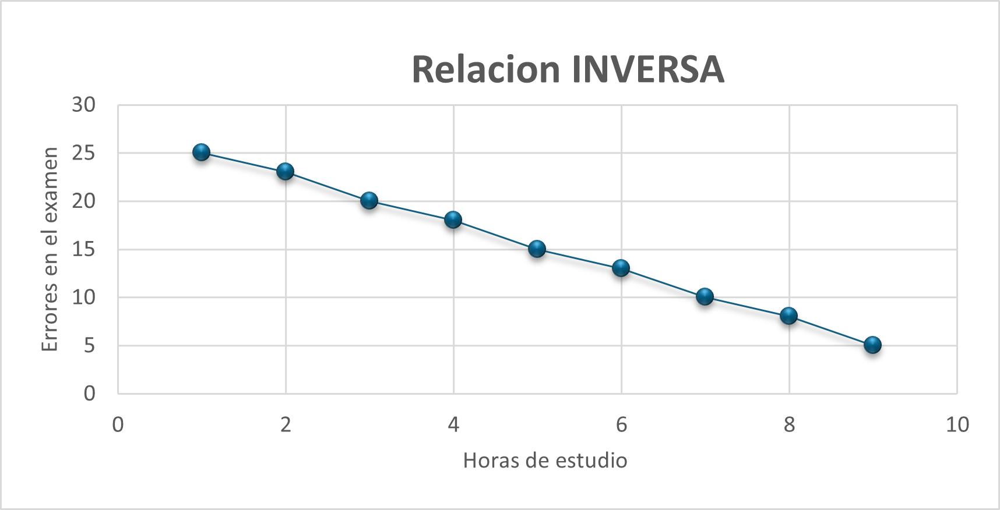

Una relación directa ocurre cuando, al aumentar una variable, la otra también aumenta de manera proporcional. Es decir, ambas variables se mueven en la misma dirección.
| Horas de trabajo | Salario ($) |
|---|---|
| 1 | 15 |
| 2 | 30 |
| 3 | 45 |
| 4 | 60 |
| 5 | 75 |
| 6 | 90 |
| 7 | 105 |
| 8 | 120 |
| 9 | 135 |
Aquí, se observa una relación directa entre las horas de trabajo y el salario. A medida que aumentan las horas trabajadas, el salario también aumenta de manera proporcional. Esto sugiere que el salario se calcula a una tasa fija por hora (en este caso, $15 por hora).
Una relación inversa ocurre cuando al aumentar una variable la otra disminuye. Las variables se mueven en direcciones opuestas.
| Horas de estudio | Errores en el examen |
|---|---|
| 1 | 25 |
| 2 | 23 |
| 3 | 20 |
| 4 | 18 |
| 5 | 15 |
| 6 | 13 |
| 7 | 10 |
| 8 | 8 |
| 9 | 5 |
En este caso, hay una relación inversa entre las horas de estudio y los errores en un examen. A medida que aumentan las horas de estudio, los errores en el examen disminuyen, lo que indica que estudiar más puede llevar a un mejor rendimiento en el examen.
Una relación inversa ocurre cuando al aumentar una variable la otra disminuye. Las variables se mueven en direcciones opuestas.
| Horas de estudio | Errores en el examen |
|---|---|
| 1 | 25 |
| 2 | 23 |
| 3 | 20 |
| 4 | 18 |
| 5 | 15 |
| 6 | 13 |
| 7 | 10 |
| 8 | 8 |
| 9 | 5 |
En este caso, hay una relación inversa entre las horas de estudio y los errores en un examen. A medida que aumentan las horas de estudio, los errores en el examen disminuyen, lo que indica que estudiar más puede llevar a un mejor rendimiento en el examen.
import numpy as np
import matplotlib.pyplot as plt
from sklearn.linear_model import LinearRegression
# Primer conjunto (Horas de trabajo vs Salario)
X_directa = np.array([1, 2, 3, 4, 5]).reshape(-1, 1) # Horas de trabajo
y_directa = np.array([15, 30, 45, 60, 75]) # Salario
# Segundo conjunto (Horas de estudio vs Errores en el examen)
X_inversa = np.array([1, 2, 3, 4, 5]).reshape(-1, 1) # Horas de estudio
y_inversa = np.array([25, 23, 20, 18, 15]) # Errores en el examen
# Crear los modelos de regresión lineal
model_directa = LinearRegression()
model_inversa = LinearRegression()
# Entrenar los modelos
model_directa.fit(X_directa, y_directa)
model_inversa.fit(X_inversa, y_inversa)
# Hacer predicciones
y_pred_directa = model_directa.predict(X_directa)
y_pred_inversa = model_inversa.predict(X_inversa)
# Visualización de los resultados
plt.figure(figsize=(12, 6))
# Plot de la regresión directa (Horas de trabajo vs Salario)
plt.subplot(1, 2, 1)
plt.scatter(X_directa, y_directa, color='blue', label='Datos reales')
plt.plot(X_directa, y_pred_directa, color='red', label='Regresión Lineal')
plt.title('Horas de trabajo vs Salario')
plt.xlabel('Horas de trabajo')
plt.ylabel('Salario ($)')
plt.legend()
# Plot de la regresión inversa (Horas de estudio vs Errores en el examen)
plt.subplot(1, 2, 2)
plt.scatter(X_inversa, y_inversa, color='blue', label='Datos reales')
plt.plot(X_inversa, y_pred_inversa, color='red', label='Regresión Lineal')
plt.title('Horas de estudio vs Errores en el examen')
plt.xlabel('Horas de estudio')
plt.ylabel('Errores en el examen')
plt.legend()
plt.tight_layout()
plt.show()